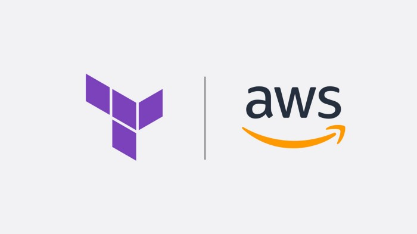

Terraform in AWS
Bill Hegazy April 17, 2022 #AWS #terraformTools and best practices, that makes your terraform life easier on AWS.

Originally published at https://medium.com on 19 June 2021
1) aws-vault
Although it's not exactly specific for Terraform aws-vault is a must-use tool for Terraform in AWS, especially when you have multiple AWS accounts.
aws-vault stores IAM credentials in your Os's secure Keystore and generates temporary credentials to be used in shell.
Using aws-vault with Terraform to easily switch between AWS accounts and avoid hard-coding AWS profile in Terraform backend state code.
Install aws-vault
Usage Example
# Run simple aws command
# Login to aws console using temporary credentials
# Use with terraform
2) tfenv
tfenv is Terraform version manager similar to rbenv.
Install tfenv
Usage Example
# List tf remote versions
# Install tf version
# Use tf version
tfenv automatic version switching
Add .terraform-version file to automatically switch between different Terraform versions and control versions between accounts.
Example:
├── .
├── aws_prodution_account
├── resource_1
│ ├── main.tf
| ├── variables.tf
| └── ...
├── resource_2
│ ├── main.tf
| ├── variables.tf
| └── ...
├── .terraform-version
├── aws_staging_account
├── resource_1
│ ├── main.tf
| ├── variables.tf
| └── ...
├── resource_2
│ ├── main.tf
| ├── variables.tf
| └── ...
├── .terraform-version
├── README.md
└── ...
3) pre-commit
Using pre-commit framework with terraform repository, will help your code to be kept clean, formated, updated document and checked for tf security issues (optional with tfsec) before committing and pushing the code to git source.
Install precommit and related tools
Install the pre-commit hook globally
DIR=/.git-template
Initialize git repo with terraform hooks
# Test pre commit
Now, whenever you run git commit on terraform repo, pre-commit will run the hooks
Auto generate Terraform docs with pre-commit
Using terraform-docs with terraform modules
4) tfsec
Want static analysis for your terraform code to help spot potential security issues? then all you need is tfsec.
Install tfsec
Usage Example
Add tfsec to your pre-commit config
Add terraform_tfsec hook to .pre-commit-config.yaml
Example:
repos:
- repo: git://github.com/antonbabenko/pre-commit-terraform
hooks:
- ...
- id: terraform_tfsec
Ignoring some tfsec rules
You may wish to ignore some warnings from tfsec. you can simply add a comment containing tfsec:ignore:<RULE> to the offending line in your templates.
For example, to ignore an open security group rule:
resource "aws_security_group_rule" "my-rule" {
type = "ingress"
#tfsec:ignore:AWS006
cidr_blocks = ["0.0.0.0/0"]
}
Other best practices:
- Use official Terraform public module for AWS, official public module are well written and tested ( don't re-invent the wheel).
- Limit access to Terraform state S3bucket access, encrypt it and enable versioning.
- Avoid storing secrets when creating a resource as Terraform state will store secrets plain-text, at least create a temporary password and change it after the resource is created.
# Simple Example
resource "random_password" "db-password" {
length = 16
special = false
}
resource "aws_db_instance" "default" {
engine = "mysql"
engine_version = "5.7"
instance_class = "db.t3.micro"
name = "mydb"
username = "foo"
password = random_password.db-password.result
...
}